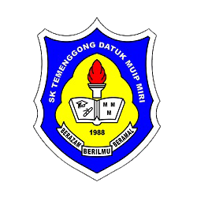
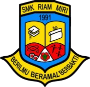
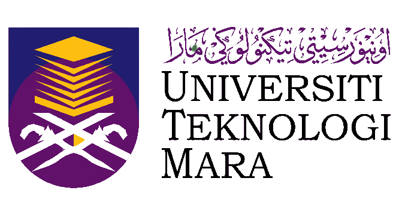

Home
About
Education
Entertaiment
Hometown
Gallery
“Education is the key that unlocks the golden door to freedom.” —George Washington Carver.
Education Journey
Education Level
Institution
Year
Primary School
SK Temenggong Datuk Muip
2010-2015
Secondary School
SMK Riam Taman Tunku
2016-2021(because of covid)
Diploma
UiTM Merbok Kedah
2021-until now
SEKOLAH KEBANGSAAN TEMENGGONG DATUK MUIP

Primary school in Malaysia named after the historical figure Temenggong Datuk Muip.
Provides a holistic education and places emphasis on character development.
Offers a wide range of co-curricular activities to facilitate students' growth and exploration.
Well-equipped with facilities such as classrooms, library, science lab, computer lab, and sports facilities.
For more information about SK Temenggong Datuk Muip, you can visit their
Facebook page
.
SEKOLAH MENENGAH KEBANGSAAN RIAM TAMAN TUNKU

Secondary school located in Malaysia, known as SMK Riam Taman Tunku.
Focuses on providing quality education and fostering holistic development among students.
Offers a diverse range of co-curricular activities to enhance students' personal growth and exploration.
Well-equipped with modern facilities, including classrooms, library, science lab, computer lab, and sports facilities.
To learn more about SMK Riam Taman Tunku, you can visit their
Facebook page
.
UiTM MERBOK, KEDAH

Offers diverse academic programs.
Offers diverse academic programs.
Provides modern facilities for students
Engages with the local community for socio-economic development.
To learn more about UiTM Merbok, you can visit their
website
.